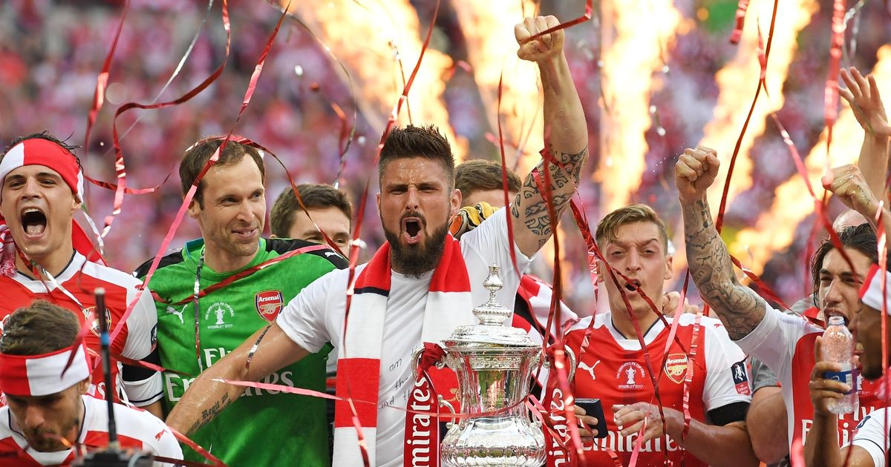
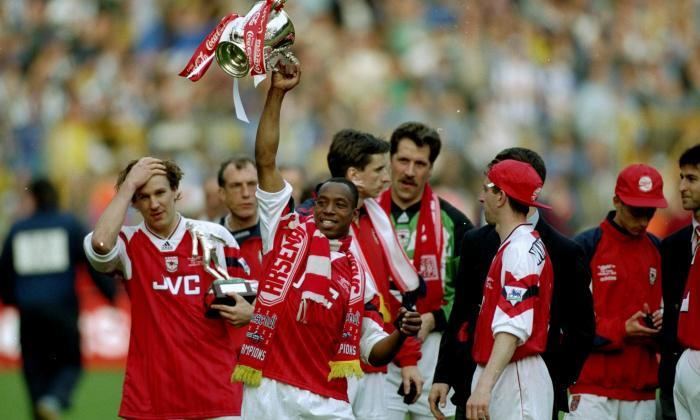
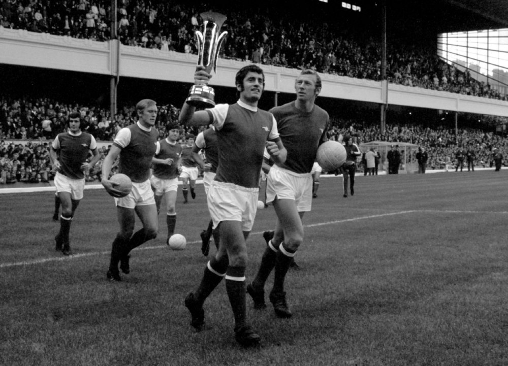
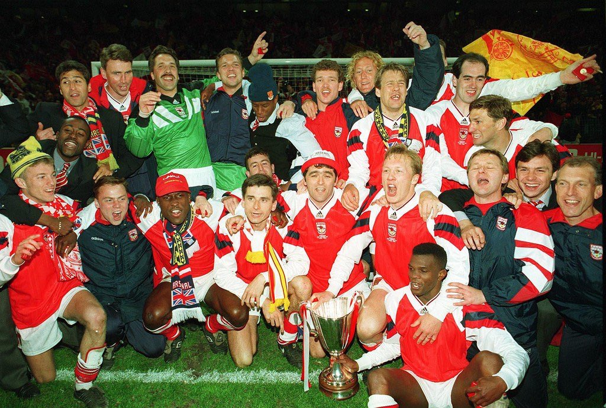

2017 Beat Chelsea 2-1
2015 Beat Aston Villa 4-0
2014 Beat Hull City 3-2
2005 Beat Manchester United 5-4 on pens
2003 Beat Southampton 1-0
2002 Beat Chelsea 2-0
1998 Beat Newcastle United 2-0
1993 Beat Sheffield Wednesday 2-1
1979 Beat Manchester United 3-2
1971 Beat Liverpool 2-1
1950 Beat Liverpool 2-0
1936 Beat Sheffield United 1-0
1930 Beat Huddersfield Town 2-0
* Arsenal currently hold the record for most FA Cup wins

LEAGUE CUP WINNERS (2)
1993 Beat Sheffield Wednesday 2-1
1987 Beat Liverpool 2-1

EUROPEAN FAIRS CUP WINNERS (1)
1970 Beat Anderlecht 4-3 on aggregate

EUROPEAN CUP WINNERS CUP WINNERS (1)
1994 Beat Parma 1-0 (in Copenhagen)

CHARITY/COMMUNITY SHIELD WINNERS (14+1 SHARED)
2017 Beat Chelsea 4-1 on pens (aet: after 1-1)
2015 Beat Chelsea 1-0
2014 Beat Manchester City 3-0
2004 Beat Manchester United 3-1
2002 Beat Liverpool 1-0
1999 Beat Manchester United 2-1
1998 Beat Manchester United 3-0
1991 Drew with Tottenham Hotspur 0-0 (shared)
1953 Beat Blackpool 3-1
1948 Beat Manchester United 4-3
1938 Beat Preston North End 2-1
1934 Beat Manchester City 4-0
1933 Beat Everton 3-0
1931 Beat West Bromwich Albion 1-0
1930 Beat Sheffield Wednesday 2-1